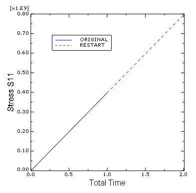
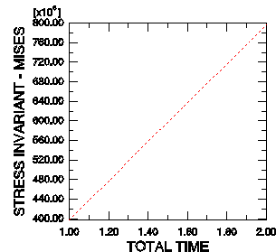

|
Postprocessing
Plotting the Eigenmodes of the Pipe System
Plotting X–Y graphs from field data for selected steps
Use the field data stored in the output database files, Pipe.odb and PipeRestart.odb, to plot the history of the axial stress in the pipe for the whole simulation.
- In the Results Tree, double-click XYData to show the Create XY Data dialog box.
- Select
ODB field output from this dialog box, and click Continue to proceed.
- In the XY Data from ODB Field Output dialog box, select the Variables tab.
- Accept the default selection of
Integration Point for variable position.
- Select
S11 from the list of available stress components.
- Toggle
Select for the section point.
Click Settings to choose a section point. - In the Field Report Section Point Settings dialog box:
- Select the category
beam and choose any available section point for the pipe cross-section.
- In the XY Data from ODB Field Output dialog box, select the Elements/Nodes tab.
Select Element labels as the selection Method.
There are 30 elements in the model, and they are numbered consecutively from 1 to 30. Enter any element number (e.g., 18) in the Element labels field.
- Click
Active Steps/Frames, and select Pull II as the only step to extract data from.
- At the bottom of the XY Data from ODB Field Output dialog box:
Click Plot to see the history of axial stress in the element.
The resulting plot shows the axial stress history for each integration point of the element during the restart analysis. Since there is a job history prior to the restart, it is desirable to view the entire analysis.
Plotting history of entire analysis
Save the current plot by clicking Save at the bottom of the XY Data from ODB Field Output dialog box. Two curves are saved (one for each integration point), and default names are given to the curves. Rename one curve RESTART, and delete the other curve. From the main menu bar, select File→Open or use the tool in the File toolbar to open the file Pipe.odb. Following the procedure outlined above, save the plot of the axial stress history for the same element and integration/section point used above. Name this plot ORIGINAL. In the Results Tree, expand the XYData container. Select both plots with [Ctrl]+Click. Right click to display a context menu. Select Plot from this menu to create a plot of axial stress history in the pipe for the entire simulation. - To change the style of the line, open the Curve Options dialog box.
- For the
RESTART curve, select the dotted line style — — —.
- Dismiss the dialog box.
- To change the axis titles, open the Axis Options dialog box. In the Title tab:
- Change the X-axis title to
TOTAL TIME.
- Change the Y-axis title to
STRESS S11.
- Dismiss the dialog box.
|

|

|
|
Figure 1. History of axial stress in the pipe.
|
Figure 2. History of axial stress in the pipe during Step 3.
|
|

 This content is available under a Creative Commons Attribution-NonCommercial 4.0 Unported License.
This content is available under a Creative Commons Attribution-NonCommercial 4.0 Unported License.